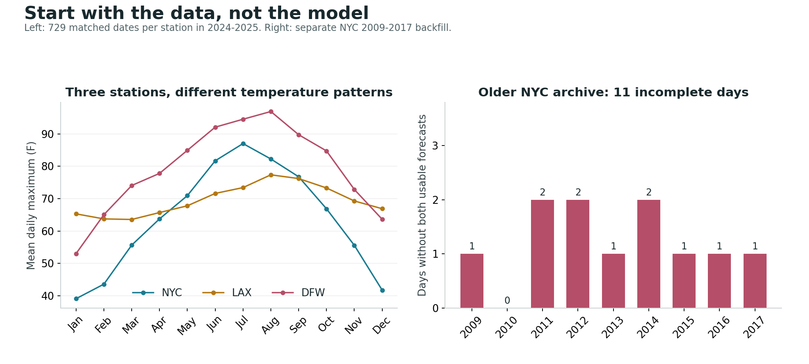

From weather records to forecasts
The project explores whether statistical post-processing can improve a station's next-day maximum-temperature forecast. It combines archived forecasts from the Iowa Environmental Mesonet with daily observations from NOAA, aligning forecast issue times, station records, and the day being predicted.
Weather features capture temperature trajectories, wind, cloud cover, and differences between forecast sources. Chronological validation keeps model selection ordered in time, while regional experiments compare local, pooled, and simulated federated models across the three stations.